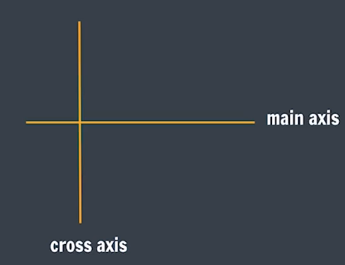
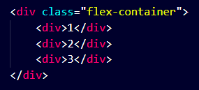

What is Flexbox?
(Flexible Box Layout)It is a one-dimensional layout method for arranging items in rows or columns. It makes website Responsive.
Flex Model
Flexbox Elements
There are two flexbox Elements :-
-
Flex Container
The parent element where flexbox is applied. It contains flex items.
-
Flex Items
The child elements inside the flex container that are arranged using flexbox.
The element above represents a flex container (the blue area) with three flex items.
Note :
We have to give display: flex; property to the "flex container".

Flex-Direction
It sets how flex items are placed in the flex container, along which axis and direction.
For Flex direction we use follwing property on main and cross axis :-
-
Main axis
-
Left to Right
flexbox-direction: row; -
Right to Left
flexbox-direction: row-reverse;
-
Left to Right
-
Cross axis
-
Top to Bottom
flexbox-direction: column; -
Bottom to Top
flexbox-direction: column-reverse;
-
Top to Bottom
Justify-Content
Tells how the browser distributes space between and around content items along the main-axis.
| Value | Description | Code |
|---|---|---|
| center | aligns the flex items at the center of the container. | justify-content: center; |
| flex-start | ligns the flex items at the beginning of the container (this is default). | justify-content: flex-start; |
| flex-end | aligns the flex items at the end of the container. | justify-content: flex-end; |
| space-around | displays the flex items with space before, between, and after the lines. | justify-content: space-around; |
| space-between | displays the flex items with space between the lines. | justify-content: space-between; |
| space-evenly | displays the flex items with space before, between, and after the lines evenly. | justify-content: space-evenly; |
flex-wrap
Sets whether flex items are forced onto one line or can wrap onto multiple lines.
| Value | Description | Code |
|---|---|---|
| wrap | specifies that the flex items will wrap if necessary. | flex-wrap: wrap; |
| nowrap | specifies that the flex items will not wrap (this is default). | flex-wrap: nowrap; |
| wrap-reverse | specifies that the flexible items will wrap if necessary, in reverse order. | flex-wrap: wrap-reverse; |
align-items
Distributes our items along the cross axis.
used to align the flex items.
| Value | Description | Code |
|---|---|---|
| center | aligns the flex items in the middle of the container. | align-items: center; |
| flex-start | aligns the flex items at the top of the container. | align-items: flex-start; |
| flex-end | aligns the flex items at the bottom of the container. | align-items: flex-end; |
| stretch | stretches the flex items to fill the container (this is default). | align-items: stretch; |
| baseline | aligns the flex items such as their baselines aligns. | align-items: baseline; |
align-content
it sets the distribution of space between and around content items along a flexbox's cross-axis.
used to align the flex lines.
| Value | Description | Code |
|---|---|---|
| space-between | displays the flex lines with equal space between them. | align-content: space-between; |
| space-around | displays the flex lines with space before, between, and after them. | align-content: space-around; | space-evenly | displays the flex lines with equal space between them evenly. | align-content: space-evenly; |
| stretch | stretches the flex lines to take up the remaining space (this is default). | align-content: stretch; |
| baseline | align the content of a flex container along the baseline of the items. . | align-content: baseline; |
| center | displays the flex lines in the middle of the container. | align-content: center; |
| flex-start | displays the flex lines at the start of the container. | align-content: flex-start; |
| flex-end | displays the flex lines at the end of the container. | align-content: flex-end; |
align-self
Aligns an item along the Cross Axis..
specifies the alignment for the selected item inside the flexible container.
| Value | Description | Code |
|---|---|---|
| auto | Default. The element inherits its parent container's align-items property, or "stretch" if it has no parent container. | align-self: auto; |
| center | The element is positioned at the center of the container. | align-self: center; |
| flex-start | The element is positioned at the beginning of the container. | align-self: flex-start; |
| flex-end | The element is positioned at the end of the container. | align-self: flex-end; |
| baseline | The element is positioned at the baseline of the container. | align-self: baseline; |
Flex sizing
-
flex-basis
It is used for flex sizing.
It sets the initial main size of a flex item.
specifies the initial length of a flex item.Note :
If :- flex-direction: row;
then width of the individual item will be changed.
If :- flex-direction: column;
then height of the individual item will be changed.
div {
flex-basis: 200px;
} -
flex-grow
♠ It specifies how much of the flex container's remaining space should be assigned to the flex item's main size
♠ specifies how much a flex item will grow relative to the rest of the flex items.
♠ Its by default value is "1".div {
flex-grow: 1;
}Note :
in this we use max-width & max-width Property to limit the value of height and width.
-
flex-shrink
♠ It sets the flex shrink factor of a flex item.
♠ specifies how much a flex item will shrink relative to the rest of the flex items.
♠ Its by default value is "1".div {
flex-shrink: 1;
}Note :
in this we use min-width & min-width Property to limit the value of height and width.
Flex Shorthand :-
Note
display: grid; and display: flex; are "Block" element.
If We want to make them inline element the we have to use :- display: inline-grid; and display: inline-flex;.
We can play games to learn flexbox by following website.
PLAY GAMES TO LEARN FLEXBOX
-
Flex Box Delta Batch Practice Page :-
FLEXBOX PRACTICE -
Flex Box Delta Batch Homework Page :-
FLEXBOX HOMEWORK